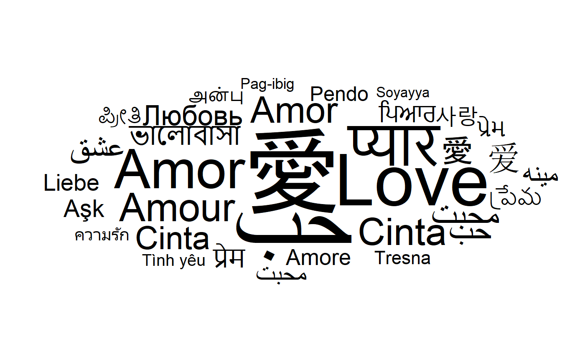
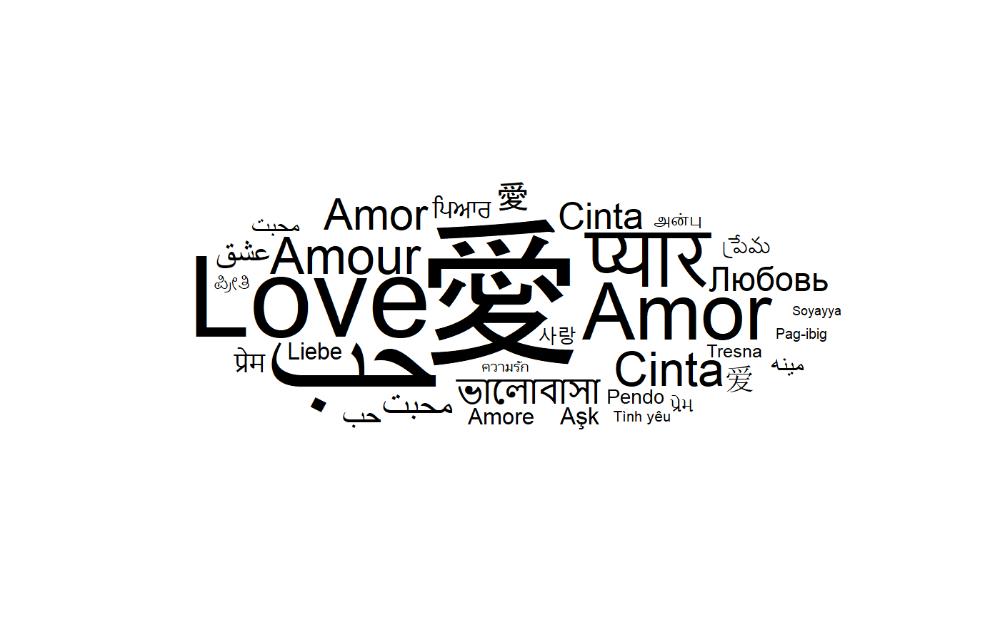
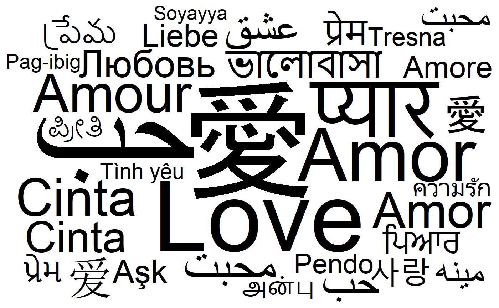
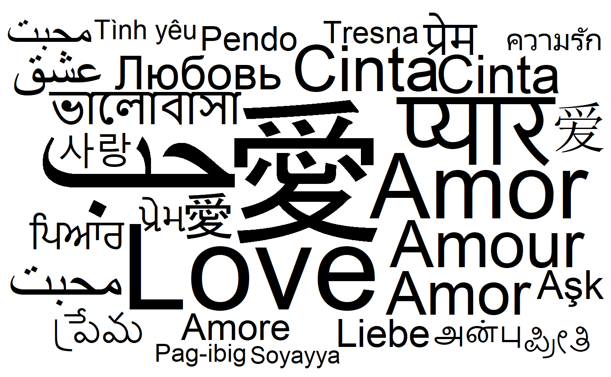
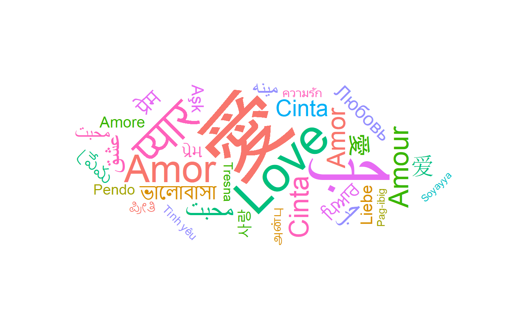
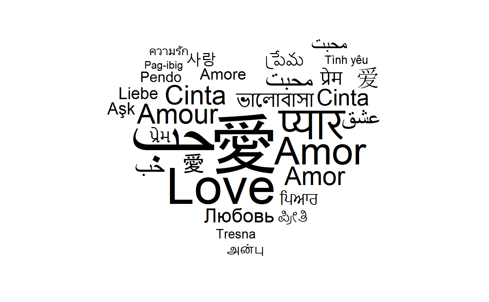

ggwordcloud: a wordcloud geom for ggplot2
E. Le Pennec
2018-10-15
Source:vignettes/ggwordcloud.Rmd
ggwordcloud.Rmdggwordcloud provides a wordcloud text geom for ggplot2. The placement algorithm implemented in C++ is close to the one used in wordcloud2.js and thus aims to be a replacement of wordcloud2 that produces ggplot2 type plot instead of an html widget. Note that the current version does not provide the shape and mask possibility of wordcloud2. Even if the algorithm of wordcloud is similar, ggwordcloud is much faster and allows arbitrary rotations of the words.
This vignette is meant as a quick tour of its possibility.
Package installation
The package can be installed from CRAN by
or the development version from the github repository
Wordcloud
As an example, we will use the mtcars dataset
Let’s load the package and set the random seed.
A basic wordcloud can be obtained by:
 We have used a minimal theme to display only the words.
We have used a minimal theme to display only the words.
Because there is some randomness in the algorithm, the same command can yield a different result:

Wordcloud and text size
We will use the mpg variable to define a size and modify two cars so that they are much larger than the other ones:
We can now add this new variable to the aesthetic:

In order to obtain a better picture, one can play with the size scale:
ggplot(data = dat, aes(label = name, size = size)) + geom_text_wordcloud() +
scale_size_area(max_size = 12) +
theme_minimal()
Wordcloud and text area
By default, the size of the font depends linearly from the square root of the size aesthetic rather than the raw size aesthetic. This is a natural choice for a shape as the area of the shape will be proportional to the raw size aesthetic but not necessarily for texts with different lengths. In ggwordcloud2, there is an option, area_corr to scale the texts so that their area is a function of the raw size aesthetic when used in combination with scale_size_area:
ggplot(data = dat, aes(label = name, size = size)) +
geom_text_wordcloud(area_corr = TRUE) +
scale_size_area(max_size = 12) +
theme_minimal()
One can equivalently use the geom_text_wordcloud_area geom:
ggplot(data = dat, aes(label = name, size = size)) +
geom_text_wordcloud_area() +
scale_size_area(max_size = 12) +
theme_minimal()
By default, the area is proportional to the raw size aesthetic raised to the power \(1/.7\) in order to match the human area perception. To obtain an area proportional to the raw size aesthetic, it suffices to set the area_corr_power to \(1\):
ggplot(data = dat, aes(label = name, size = size)) +
geom_text_wordcloud(area_corr = TRUE, area_corr_power = 1) +
scale_size_area(max_size = 12) +
theme_minimal()
Wordcloud with too many words
Note that words that cannot be placed due to a lack of space are by default displayed at their original position:
set.seed(42)
ggplot(data = dat, aes(label = name, size = size)) + geom_text_wordcloud() +
scale_size_area(max_size = 20) +
theme_minimal()
#> Warning in wordcloud_boxes(data_points = points_valid_first, boxes =
#> boxes, : Some words could not fit on page. They have been placed at their
#> original positions. It is up to the user to avoid this issue by either removing some words or changing the size scale.
One can also chose to remove those words using the rm_outside option:
set.seed(42)
ggplot(data = dat, aes(label = name, size = size)) +
geom_text_wordcloud(rm_outside = TRUE) +
scale_size_area(max_size = 20) +
theme_minimal()
#> Warning in wordcloud_boxes(data_points = points_valid_first, boxes =
#> boxes, : Some words could not fit on page. They have been removed.
Wordcloud and rotation
Let’s start by creating a rotation angle of 90 for 40 % of the words:
We can use this variable in the aesthetic:
ggplot(data = dat, aes(label = name, size = size, angle = rot)) +
geom_text_wordcloud() +
scale_size_area(max_size = 12) +
theme_minimal()
ggwordcloud allows arbitrary rotations:
ggplot(data = dat, aes(label = name, size = size, angle = rot)) +
geom_text_wordcloud() +
scale_size_area(max_size = 12) +
theme_minimal()
Wordcloud and eccentricity
The ggwordcloud algorithm moves the text around a spiral until it finds a free place for it. This spiral has by default a vertical eccentricity of .65, so that the spiral is 1/.65 wider than taller.
ggplot(data = dat, aes(label = name, size = size, angle = rot)) +
geom_text_wordcloud() +
scale_size_area(max_size = 12) +
theme_minimal()
This can be changed using the eccentricity parameter:
ggplot(data = dat, aes(label = name, size = size, angle = rot)) +
geom_text_wordcloud(eccentricity = 1) +
scale_size_area(max_size = 12) +
theme_minimal()
ggplot(data = dat, aes(label = name, size = size, angle = rot)) +
geom_text_wordcloud(eccentricity = .35) +
scale_size_area(max_size = 12) +
theme_minimal()
Advanced wordcloud
geom_text_wordcloud is compatible with the facet system of ggplot2:
ggplot(data = dat, aes(label = name, size = size, angle = rot)) +
geom_text_wordcloud() +
scale_size_area(max_size = 12) +
facet_wrap(~am) +
theme_minimal()
One can also specify an original position for each label that what will be used as the starting point of the spiral algorithm for this label:
ggplot(data = dat, aes(
x = factor(am), label = name, size = size, angle = rot,
color = factor(am)
)) +
geom_text_wordcloud() +
scale_size_area(max_size = 12) +
theme_minimal()
ggwordcloud as an approximate replacement for wordcloud and wordcloud2
ggwordcloud and ggwordcloud2 are two approximate replacement for respectively wordcloud and wordcloud2. They provide a similar syntax than the original functions and yields similar wordclouds, but not all the options of the original functions are implemented. Note that both use a font size proportional to the raw size aesthetic. This is implemented in ggwordcloud by the use of the scale_radius size scale.
